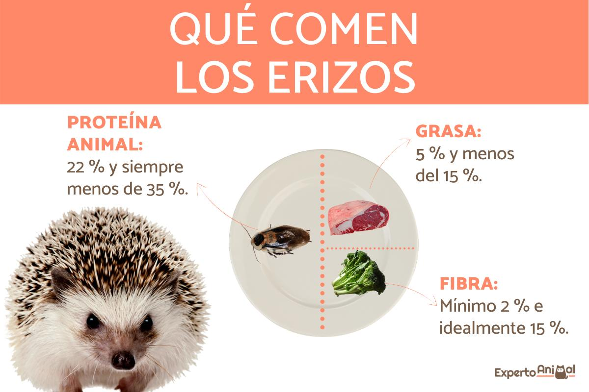

Cosas que pueden comer

Acá hay una lista sobre lo que puede comer un erizo de tierra
Carnes blancas bien cocidas
Pepino
Hierbas
Rabano
Papas hervidas
Zanahorias hervidas
Alfalfa
Insectos de criadero
Alimento de gato bajo en grasas
Manzana
Durazno
Banana
Mango
Cereza
Frutos rojos
Melon
Sandia
Pienso especial
Aca hay una lista sobre lo que no puede comer un erizo de tierra
Citricos
Frutos secos
Lacteos
Semillas
Uvas
Palta
Cebolla y ajo
Comida picante
Lupulo
Choclo
Comida condimentada
Harinas
Hongos
Chocolate y golosinas
Frituras
Bebidas alcoholicas
Recomendaciones
Debes alimentarlo entre 1 y 2 veces al dia
No le des siempre lo mismo porque son animales omnivoro
No le des mucha comida para no generar obesidad en el erizo
Debes retirarle el plato cuando termine de comer
Debes darle agua fresca todos los dias